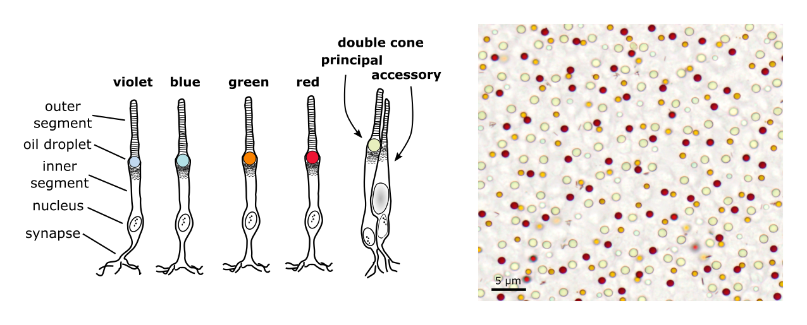
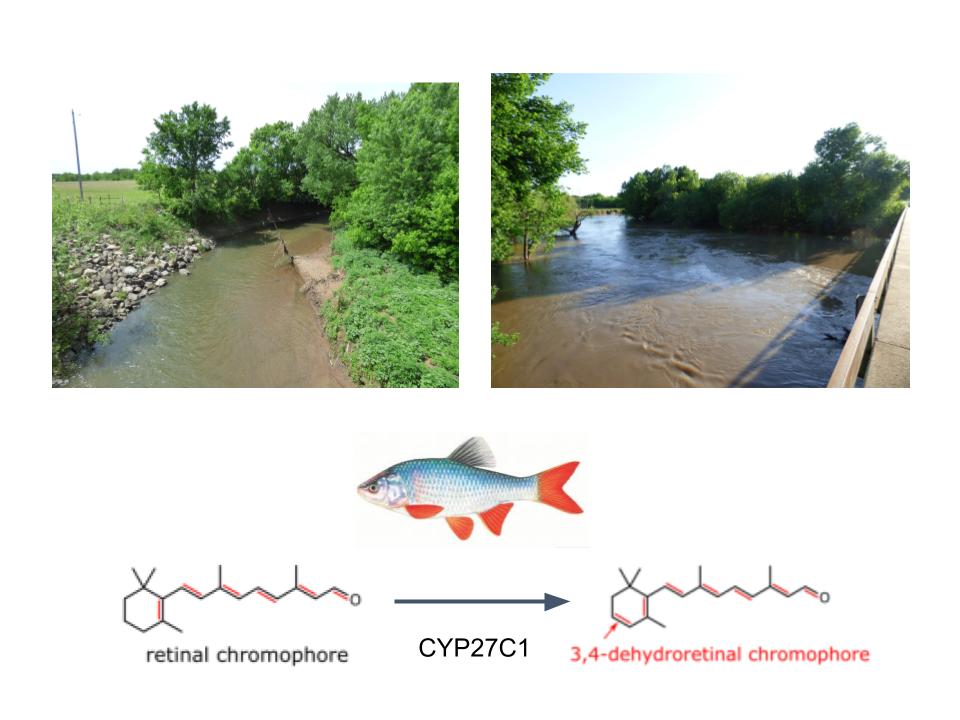

Research
We use integrative approaches to discover the physical, biochemical, and molecular bases of traits and leverage this knowledge to understand the adaptive potential of animals. We use carotenoid pigments as a window into the complex systems of vertebrate visual ecology. Most animals cannot produce carotenoids themselves and must acquire them from their diet; however, animals are able to modify the molecular structure of carotenoids to serve specific functions. This is a recurring theme in the Toomey Lab where we investigate three essential roles of carotenoids in the visual ecology of animals.
1. Visual Signal Elaboration Through Carotenoid Metabolism
Brilliant carotenoid-based coloration is a major feature of animal diversity and plays an important role in mate choice and antagonistic signaling. Through comparative genomics, transcriptomics, and functional biochemical analyses we have discovered and characterized the transporters, enzymes, and other factors that mediate carotenoid color expression in birds and fish. We are now using these insights to address long-standing questions of signal function, sexual selection, and diversification with a new level of mechanistic detail.

2. Visual System Optimization Through Carotenoid Spectral Tuning
Birds have tetrachromatic color vision mediated by four single cone photoreceptors. The spectral sensitivity of these receptors is fine-tuned by precise combinations of opsin-based spectral sensors and carotenoid-pigmented spectral filtering oil droplets within the cells. This system substantially enhances color discrimination abilities of birds and relies on the accumulation of specific carotenoid types within the different cone photoreceptors. We have used a variety of molecular genetic and biochemical approaches to discover the enzymatic mechanisms of the specific accumulation of carotenoid within the cone oil droplets. Our work has also shown that ultraviolet vision of birds involves complementary shifts in opsin-based spectral sensors and carotenoid-pigmented spectral filters that together are predicted to optimize the visual system for color discrimination.

3. Visual System Adaptation Through Visual Pigment Chromophore Switching
In aquatic environments, the spectrum of available light can vary dramatically with water quality, depth, and time of year. Many aquatic organisms have adapted to these conditions by rapidly shifting the spectral sensitivity of their photoreceptors. We were part of a team that discovered the enzyme (CYP27C1) that modifies the visual pigment chromophore to produce adaptive plastic shifts in visual sensitivity. This discovery opens exciting opportunities to understand visual system plasticity and adaptation in the aquatic environment.
Recently we have begun field studies of the visual ecology of the red shiner (Cyprinella lutrensis). We have found that chromophore composition in this species is plastic and varies with environmental light and temperature conditions. Red shiners are widely distributed and inhabit waters that differ dramatically in both the mean and variances of light and temperature. We aim to develop this species as a model for the study of the evolution of adaptive sensory plasticity.
